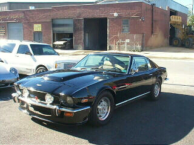
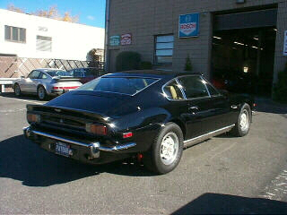

1977 Aston Martin V8 Vantage


Specs
Price |
N/A |
Top Speed |
N/A |
Acceleration |
|
Engine |
|
0-30mph |
N/A |
Type |
Twin Supercharged V8? |
0-60mph |
N/A |
Displacement |
N/A |
0-100 |
N/A |
Power |
N/A |
1/4 mile |
N/A |
Torque |
N/A |
Weight |
N/A |
Handling |
|
Gas mileage |
N/A |
Skidpad |
N/A |
City |
N/A |
600ft slalom |
N/A |
Highway |
N/A |
Powertrain |
Front engined, rear wheel drive, 6 speed manual ? |
(? = incomplete data or unverified info, N/A = info Not Available)
Beyond the specs:
I have very little info on this car, and I know I already have enough Aston Martins, but it looks like it belongs in this section. I will try to find info so that this part can be completed..
~Oracle